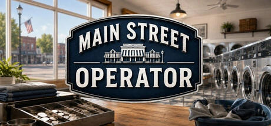
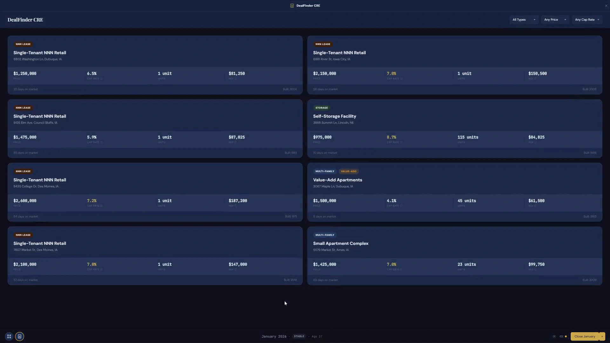
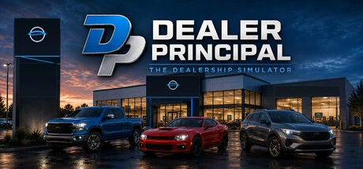

Main Street Operator
Take over a tired laundromat. Make it worth coming back to.
Wishlist on SteamAcquire property. Put capital to work. Build a family office that lasts beyond one generation.
Windows PC · Single-player
Family Office Simulator
Take over a tired laundromat. Make it worth coming back to.
Wishlist on Steam
Run the dealership, not just the showroom.
Wishlist on Steam25 achievements, with credit for existing campaigns where the saved history proves a milestone.